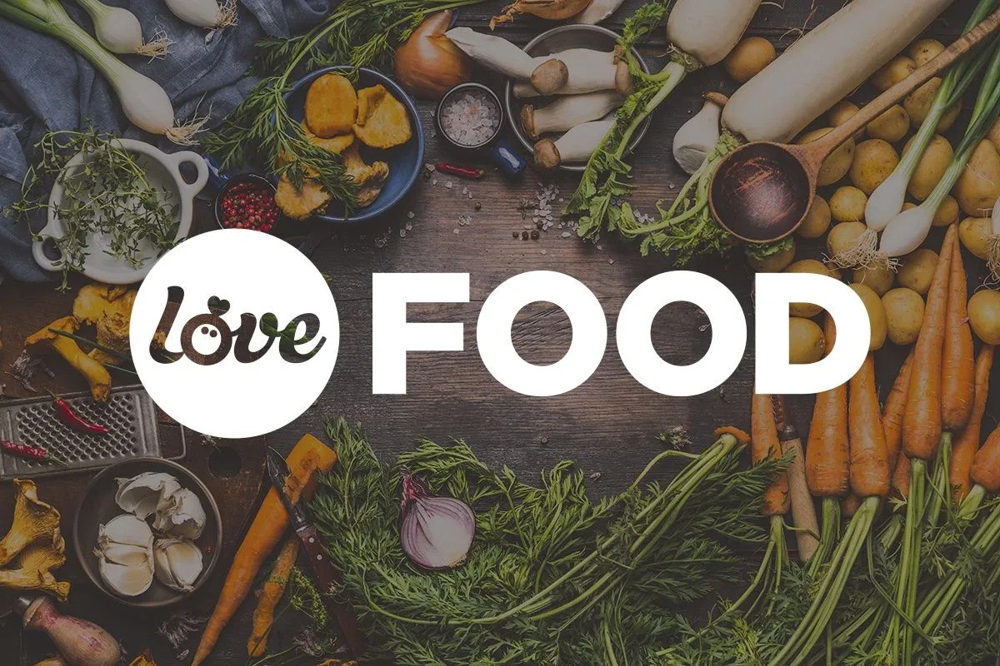
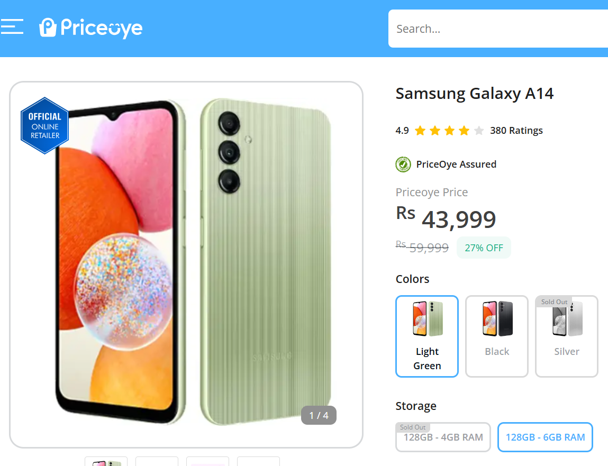
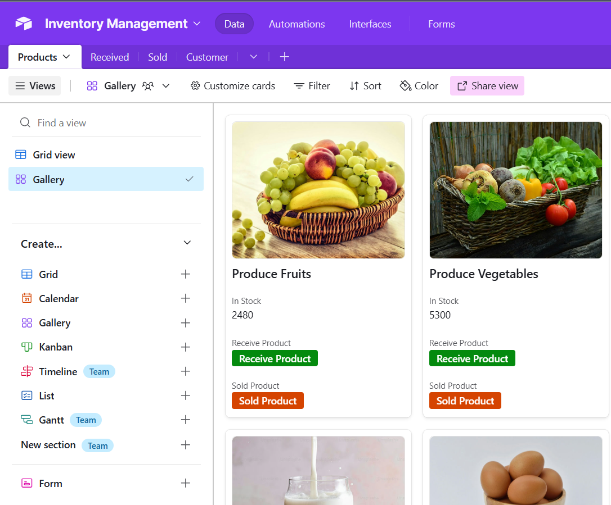
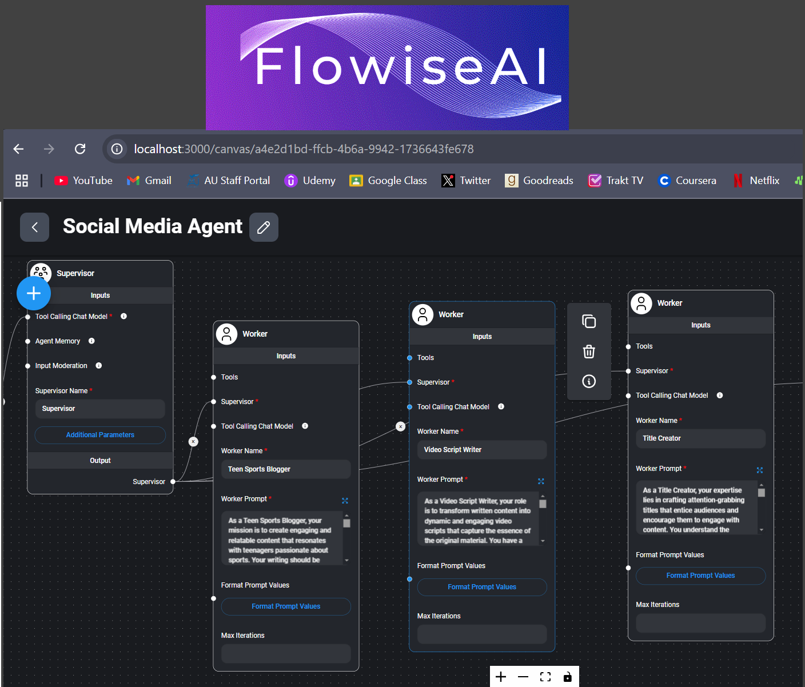

This project analyzes Amazon food reviews using two methods: traditional sentiment analysis with NLTK and advanced sentiment analysis with the pre-trained RoBERTa model from Hugging Face. The project compares the performance of both approaches in classifying review sentiments, exploring how NLTK processes text with basic NLP techniques, while RoBERTa utilizes a deep learning model for a more nuanced understanding of sentiment.
- NLP Techniques: Sentiment analysis, text preprocessing (tokenization, stemming, stop word removal).
- Deep Learning: Using pre-trained models like RoBERTa from Hugging Face.
- Python Programming: Libraries such as NLTK, Hugging Face Transformers, NumPy, Pandas, Matplotlib.
- Data Analysis: Model comparison using metrics (accuracy, precision, F1-score).
- Machine Learning: Understanding classification and evaluation methods.
- Problem-Solving: Comparing traditional and advanced sentiment analysis approaches.
An AI-Powered Document Assistant
Harness the power of AI to effortlessly extract information
and answer questions from your PDFs. This innovative chatbot,
built on LangChain and OpenAI, empowers the user to efficiently navigate complex documents.
- Python Programming: Developed the solution using Python, ensuring modular and maintainable code.
- Natural Language Processing (NLP): Implemented advanced AI models to understand and respond to user queries based on document content.
- LangChain Framework: Utilized LangChain for efficient orchestration of AI interactions, enabling document parsing and question-answering capabilities.
- OpenAI API Integration: Leveraged OpenAI's GPT models to generate accurate and context-aware responses.
- Streamlit for User Interface: Developed an interactive and user-friendly interface using Streamlit, ensuring seamless access to document analysis features.
Automating Product Price Monitoring

This Python script leverages web scraping techniques to monitor the price of a specific phone model on Priceoye.com. By automating the process, the script efficiently extracts the latest price and compares it to a predefined threshold. If the price drops below the threshold, it triggers an email alert, notifying the user of the price reduction.
- Python Programming: Used Python to develop an automated web scraping and alerting system.
- Web Scraping: Implemented web scraping techniques with libraries like BeautifulSoup and requests to extract price data from Priceoye.com.
- Data Processing: Parsed and processed scraped data for comparison against a predefined threshold.
- Automation: Designed the script to run periodically and monitor prices efficiently.
- Email Integration: Configured email alerts using SMTP to notify users of price drops.
- Problem-Solving: Automated a manual process of price monitoring, improving efficiency and user convenience.

This Airtable base is designed to streamline grocery store inventory management. It offers features to:
- Track Stock Levels: Monitor real-time inventory levels to avoid stockouts and overstocking.
- Optimize Ordering: Generate automated purchase orders based on inventory levels and sales data.
By leveraging Airtable's powerful automation and visualization tools, this system can significantly improve operational efficiency and reduce costs for grocery stores.
- Database Design: Created an organized Airtable base to manage grocery store inventory effectively.
- Automation: Configured Airtable automations to track stock levels and send alerts for low inventory.
- Data Organization: Developed structured tables for categorizing products, suppliers, and stock details.
- Inventory Tracking: Enabled features for real-time updates on stock quantities and restocking schedules.
- User Interface Customization: Designed a user-friendly layout with views tailored for different roles (e.g., manager, staff).
- Problem-Solving: Streamlined manual inventory management processes to save time and reduce errors.

The Social Media Agent automates content creation across multiple platforms using Langchain and Flowise. The system is divided into four automated workers:
- Blog Post Creation: Generates a detailed blog post.
- YouTube Script Creation: Converts the blog into a YouTube script.
- Title Generation: Creates optimized titles for both the blog and YouTube video.
- Twitter Post Creation: Generates engaging Twitter posts summarizing the content.
- Langchain Integration: Using Langchain to link multiple AI models for different tasks (content generation, script creation, etc.)
- Flowise Workflow Automation: Building and managing workflows in Flowise to connect the content generation tasks.
By leveraging Airtable's powerful automation and visualization tools, this system can significantly improve operational efficiency and reduce costs for grocery stores.